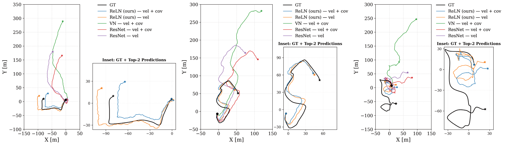
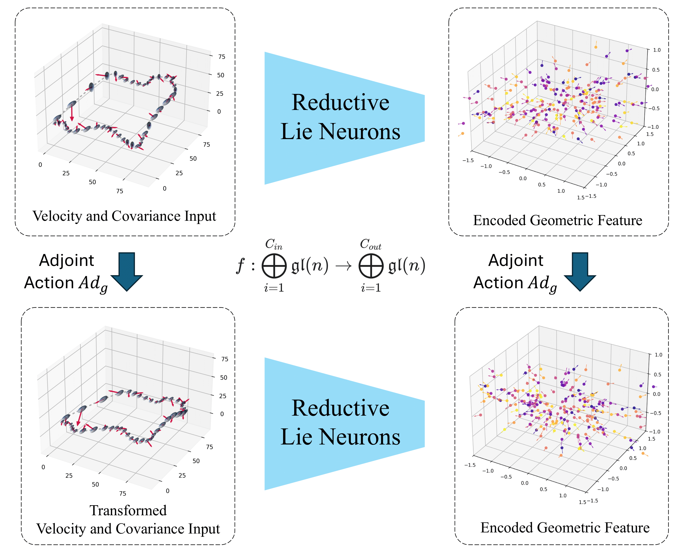
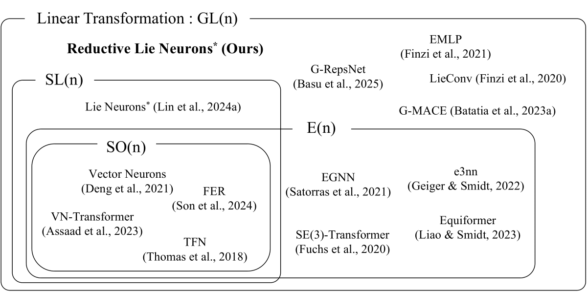

Encoding symmetries is a powerful inductive bias for improving the generalization of deep neural networks. However, most existing equivariant models are limited to simple symmetries like rotations, failing to address the broader class of general linear transformations, GL(n), that appear in many scientific domains. We introduce Reductive Lie Neurons (ReLNs), a novel neural network architecture exactly equivariant to these general linear symmetries. ReLNs are designed to operate directly on a wide range of structured inputs, including general n-by-n matrices. ReLNs introduce a novel adjoint-invariant bilinear layer to achieve stable equivariance for both Lie-algebraic features and matrix-valued inputs, without requiring redesign for each subgroup. This architecture overcomes the limitations of prior equivariant networks that only apply to compact groups or simple vector data. We validate ReLNs' versatility across a spectrum of tasks: they outperform existing methods on algebraic benchmarks with sl(3) and sp(4) symmetries and achieve competitive results on a Lorentz-equivariant particle physics task. In 3D drone state estimation with geometric uncertinaty, ReLNs jointly process velocities and covariances, yielding significant improvements in trajectory accuracy. ReLNs provide a practical and general framework for learning with broad linear group symmetries on Lie algebras and matrix-valued data.

The table below shows that our ReLN models, especially the variant processing log-covariance, significantly outperform both non-equivariant and standard equivariant (Vector Neurons) baselines in the drone state estimation task.
| Model | ID | SO(3) | ||||
|---|---|---|---|---|---|---|
| ATE | ATE(%) | RPE | ATE | ATE(%) | RPE | |
| Non-Equivariant Baselines | ||||||
| ResNet (Velocity only) | 208.07 | 95.06 | 107.60 | 217.02 | 100.39 | 111.29 |
| ResNet (Velocity + Covariance) | 205.11 | 94.94 | 106.07 | 213.26 | 98.90 | 109.37 |
| Equivariant Baselines | ||||||
| VN (Velocity only) | 17.36 | 7.52 | 13.51 | 17.36 | 7.52 | 13.51 |
| VN (Velocity + Covariance) | 191.78 | 88.66 | 98.39 | 190.22 | 88.47 | 98.26 |
| Our Equivariant Models | ||||||
| ReLN (Velocity only) | 16.85 | 7.31 | 12.7 | 16.85 | 7.31 | 12.7 |
| ReLN (Velocity + Covariance) | 16.49 | 7.21 | 13.02 | 16.49 | 7.21 | 13.02 |
| ReLN (Velocity + log-Covariance) | 13.92 | 5.99 | 11.04 | 13.92 | 5.99 | 11.04 |
A key contribution of our work is a unified framework that embeds diverse geometric inputs (like vectors and covariances) into a common Lie algebra, where they transform consistently under the adjoint action. Our network is designed to commute with this action, guaranteeing equivariance. To achieve this for general reductive algebras like gl(n), we introduce a non-degenerate, Ad-invariant bilinear form:
B(X, Y) = 2n * tr(XY) - tr(X)tr(Y)
This form is the fundamental tool used to build our equivariant layers.

Unlike previous methods tailored for specific groups, ReLNs provide a general framework applicable to a wide range of scientific domains governed by diverse Lie group symmetries.

Our paper is currently under review. If you find our work useful, please cite the ArXiv preprint (link will be available here soon).
@article{kim2025equivariant,
title={Equivariant Neural Networks for General Linear Symmetries on Lie Algebras},
author={Kim, Chankyo and Zhao, Sicheng and Zhu, Minghan and Lin, Tzu-Yuan and Ghaffari, Maani},
journal={arXiv preprint arXiv:2510.22984},
year={2025}
}